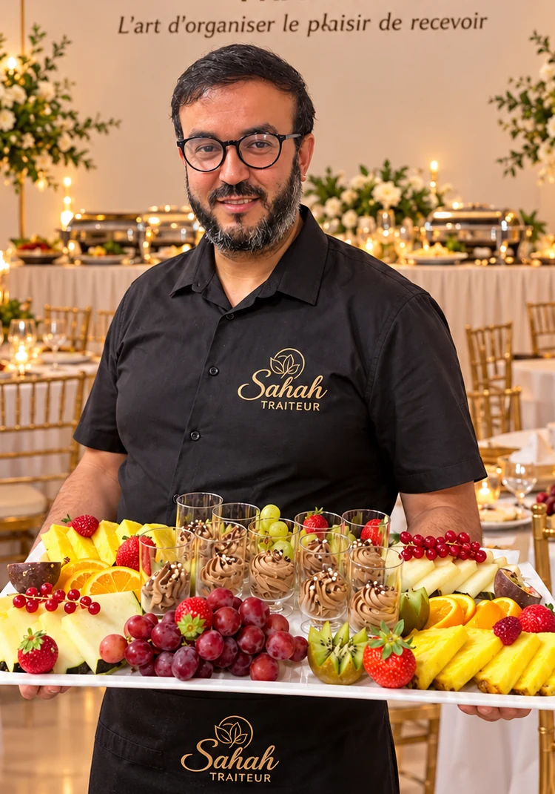
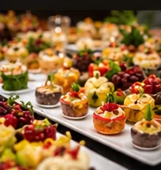
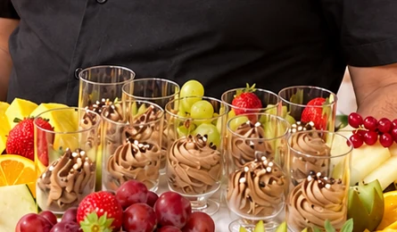
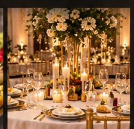

Mariages & Cérémonies
Un jour unique, un repas d’exception
TRAITEUR MAROCAIN • À VOTRE DISPOSITION PARTOUT EN BELGIQUE
Sarah Traiteur, traiteur marocain à votre disposition partout en Belgique, c’est bien plus qu’un repas. C’est une expérience culinaire sur mesure, alliant qualité, raffinement et convivialité.
Un jour unique, un repas d’exception
Anniversaires, baptêmes, fêtes de famille
Séminaires, inaugurations, cocktails
Fraîcheur, variété, élégance
Des produits frais et de saison

À PROPOS DE NOUS
Sarah Traiteur est un traiteur marocain événementiel à votre disposition partout en Belgique. Notre objectif : vous offrir une cuisine savoureuse, élégante et authentique, avec des produits de qualité et un service irréprochable.
Mariages, cérémonies, anniversaires, baptêmes, fêtes de famille ou événements professionnels : chaque réception est préparée sur mesure afin que vous puissiez profiter pleinement de vos invités.



NOTRE SAVOIR-FAIRE
Avec passion et exigence, nous créons des menus sur mesure adaptés à vos envies et à votre événement. Notre équipe met tout en œuvre pour faire de votre réception un moment inoubliable.
NOS PRESTATIONS
Une approche sur mesure pour transformer votre événement en un souvenir gourmand.
Une journée unique mérite une expérience culinaire à sa hauteur : cocktail, buffet, desserts et accompagnement.
Parler de votre mariage →Anniversaires, baptêmes et fêtes de famille avec une table généreuse, élégante et chaleureuse.
Organiser votre réception →Séminaires, inaugurations, cocktails et événements d’entreprise avec une organisation fluide.
Préparer votre événement →GALERIE
Des compositions généreuses, des détails soignés et une mise en scène pensée pour chaque réception.
TÉMOIGNAGES
★★★★★« Un service impeccable, des plats délicieux et une équipe aux petits soins. Nos invités ont été ravis ! »
★★★★★« Une organisation parfaite et une cuisine raffinée. Je recommande à 100 % ! »
★★★★★« Professionnel, à l’écoute et très créatif. Un vrai plaisir de travailler avec Sarah Traiteur. »
QUESTIONS FRÉQUENTES
Les réponses essentielles pour préparer votre mariage, votre réception privée ou votre événement professionnel avec Sarah Traiteur.
Sarah Traiteur est à votre disposition partout en Belgique pour les événements privés et professionnels.
Nous accompagnons les mariages et cérémonies, les anniversaires, baptêmes et fêtes de famille, ainsi que les séminaires, inaugurations, cocktails et autres événements professionnels.
Oui. Sarah Traiteur est un traiteur marocain événementiel et prépare des prestations sur mesure pour les mariages et cérémonies en Belgique.
Oui. Nous proposons des buffets et plateaux avec une présentation soignée, adaptés au type d’événement et au nombre de convives.
Vous pouvez remplir le formulaire de demande de devis sur le site, appeler le +32 4 89 99 95 95 ou écrire à jaafar250594@gmail.com.
VOTRE ÉVÉNEMENT
Parlez-nous de votre projet et recevez une proposition personnalisée.
CONTACT
Pour toute demande d’information ou de devis personnalisé, notre équipe est à votre écoute.